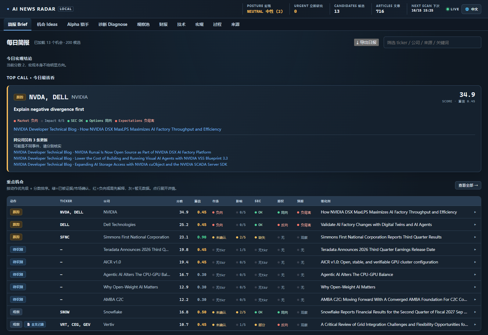

搜集公开信息
读取 RSS/Atom、部分公司投资者关系页面及可用的公开市场来源。
市场叙事会淹没在新闻、公司披露和技术动态里。真正费时的，是判断一条消息是否有来源、是否对应具体业务证据，以及还有哪些关键信息缺失。
我把 AI News Radar 做成一个本地运行的研究工作台：收集公开信息、标出候选信号与可用上下文，并保留原始链接和不确定性，帮助人更快进入核查，而不是替人下结论。
分数是线索，不是结论。重要信息始终要回到原始来源核实。
用五个清晰的步骤，把发现、交叉核查与复盘连起来。
读取 RSS/Atom、部分公司投资者关系页面及可用的公开市场来源。
从预设观察名单出发，也发现名单之外的潜在线索，并谨慎匹配公司。
在来源可用时，加入市场、财报、申报、期权、持仓与技术动态。
检查原始材料、证据强弱和缺失项，再由研究者决定下一步。
生成简报与 Markdown/JSON 报告，并用后续数据观察历史信号。
根据本地运行环境和数据源状态逐步补足信息；缺失值会尽量明确显示。
公开信息聚合、主题扫描与候选公司发现。
可解释的信号评分、保守的公司匹配与原文链接。
市场、财务、财报、期权、持仓与技术信息。
本地审核状态、双语网页界面、命令行和报告导出。

$ ai-news-radar web
研究工作台正在本机运行
AI News Radar 仅供研究与教育用途，不构成投资建议。数据、评分和分析可能延迟、不完整或错误；请独立核实，并自行承担使用软件所作决定的责任。